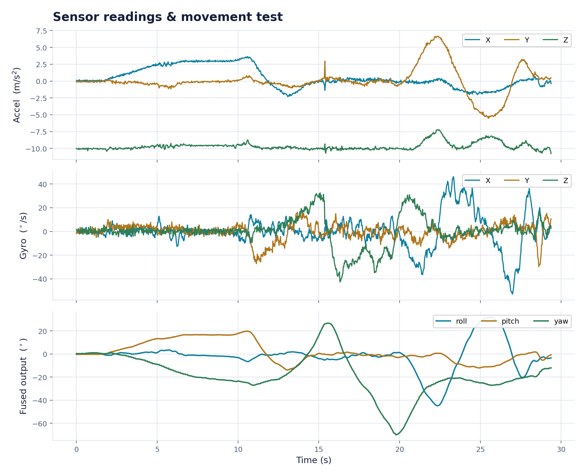

Selected Work
Systems I've designed and built end to end — hardware, firmware, and the control theory that ties them together.

A from-scratch flight-control system for a hand-launched RC airplane — a 15-state estimator, cascade PID, and autonomous loiter, validated in simulation and flown.